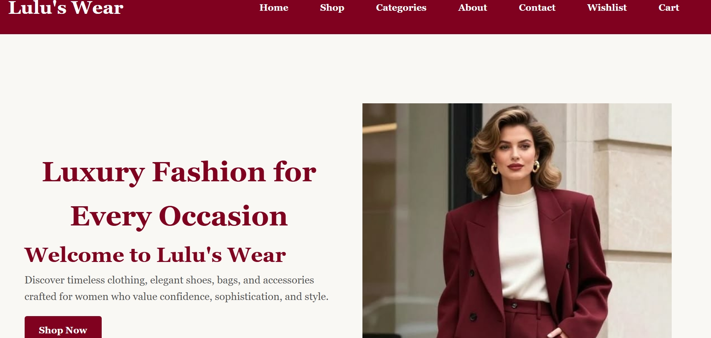

A record of what I create, practise, and accomplish.

My first attempt at building a web page with HTML.
This project helped me understand how HTML structures headings, paragraphs, links, and images.
Learning achievement:
Completed my first HTML page.Academic achievement:
Add a real academic achievement here.Personal achievement:
Add an achievement you are proud of.Visitors can use the link below to download a sample project document.
Download My Project Report(PDF)My future projects will help me develop these abilities:
Every project is an opportunity to learn something new.